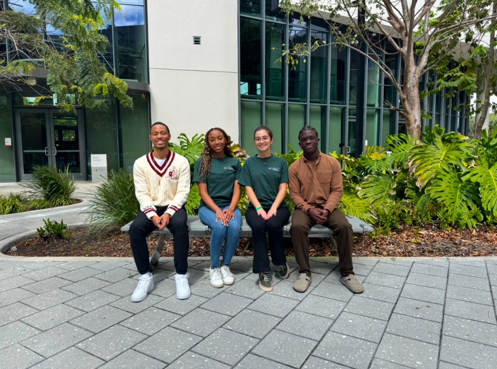
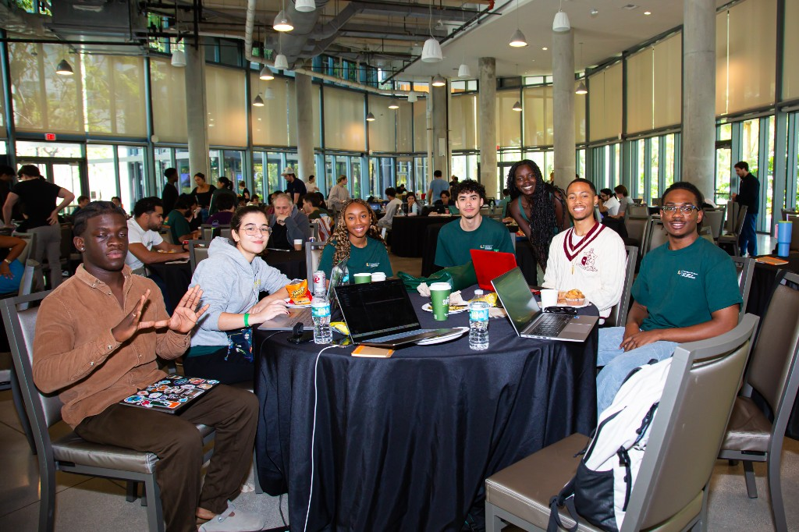
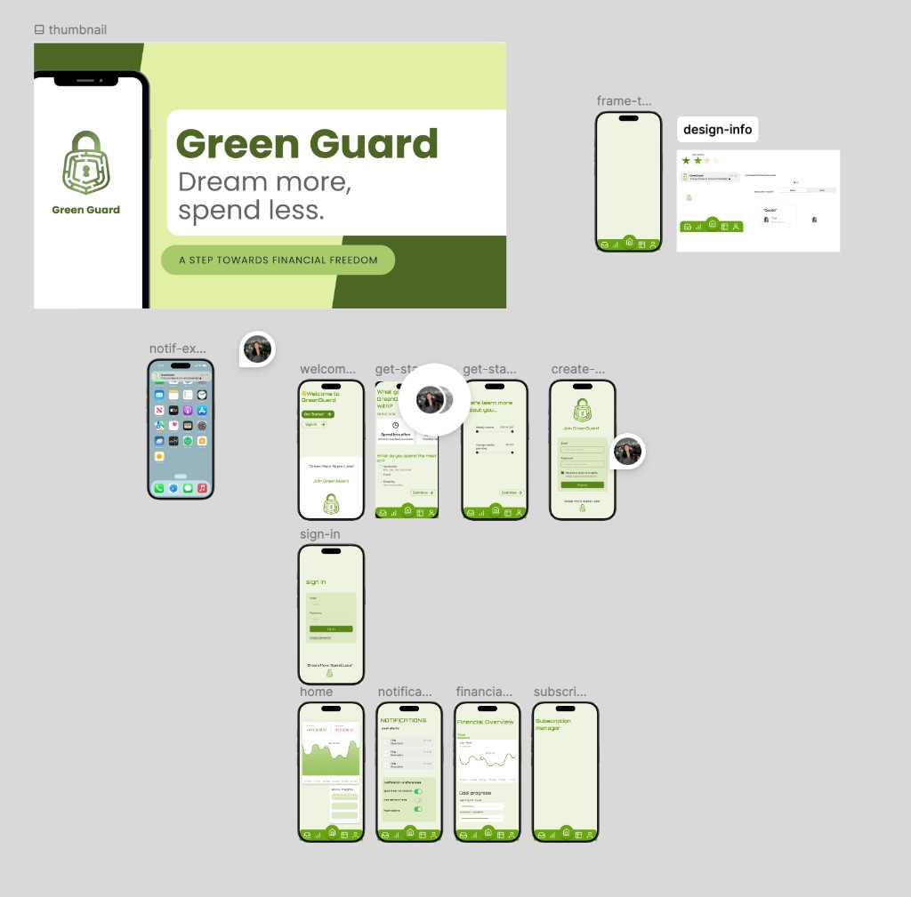

Goal
Create a financial solution for young people. I translated our core concept: location-based financial services, into a cohesive style guide and mobile prototype to establish a clear visual and functional foundation for the solution and presentation.
Role
I coordinated the design strategy and developed the high-fidelity Figma prototype, managing the user interface development to ensure technical consistency across the team.


Process Highlights
The visual system was designed around clear hierarchy, calm green tones, and quick-glance components so users could see spending information and nearby opportunities without interface overload. We prioritized consistency between navigation, dashboard cards, and alerts so our final prototype felt product-ready rather than a disconnected set of screens.

To keep momentum during the build window, I established reusable component patterns in Figma and aligned those patterns with implementation expectations for the rest of the team. That reduced rework, accelerated screen handoff decisions, and gave our presentation a coherent story from onboarding to financial insights.
Result
This design system served as the blueprint for our team's desktop site and was the centerpiece of our solution to the judges, winning us first place in our category! Read more